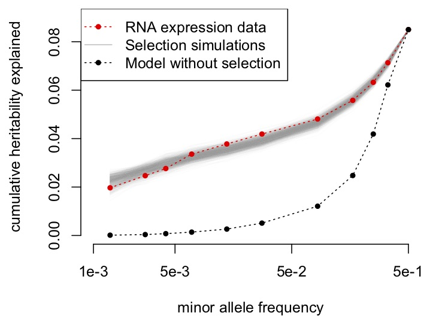

Research Projects
The big picture: how do natural selection and competition shape biological diversity?
All living things must compete to survive and produce offspring. Sometimes competition occurs between members of the same species (for example, competition for mates) or between members of different species (for example, different species of grass competing for space and sunlight). Competition should usually reduce diversity, because it removes individuals from the population or causes some individuals to have fewer offspring than others. Given that competition is likely to be ubiquitous, this raises an important question in evolution and ecology: why do we observe such striking diversity among living things? On the evolutionary side, my research seeks to address this question using models of natural selection and large genomic datasets, while on the ecological side I use models of infectious disease and competition between species to make predicitions about diversity in interacting communities.
Predicting the outcome of competition and pathogen sharing in plant communities
Exotic species can dramatically affect species composition by directly out-competing native species, but in some cases native and introduced species may coexist stably. Pathogen spillover between species can also impact species composition, and can either promote coexistence or competitive exclusion. We studied competition between native and exotic species in California grasslands. Our analysis suggests that invaders dominate over California native species, but that the likelihood of persistence of natives depends integrally on the order of arrival of their exotic competitors. The transmission of fungal infection has an overall weak impact on plant fitness in this system and does not substantially increase the chance that California native species will persist. Our results provide a contrast to many earlier studies that focused on undisturbed communities and found stabilizing niche differences between specices.
When does adaptation occur in response to environmental change?
 It's clear that species respond to changes in their environments, and that some environmental changes can cause species to adapt at the genetic level. Despite
the developing catalog of such adaptation events that have been reported across species, we still lack frameworks that can predict when adaptation is likely to occur.
Without a better understanding of the evolutionary genetics of adaptation and the factors that drive adaptation, it will remain difficult to predict when declining species
can adapt sufficiently rapidly to stave off extinction.
It's clear that species respond to changes in their environments, and that some environmental changes can cause species to adapt at the genetic level. Despite
the developing catalog of such adaptation events that have been reported across species, we still lack frameworks that can predict when adaptation is likely to occur.
Without a better understanding of the evolutionary genetics of adaptation and the factors that drive adaptation, it will remain difficult to predict when declining species
can adapt sufficiently rapidly to stave off extinction.
David Enard and I are developing new methods to infer adaptation rate and strength from genomic data in more realistic evolutionary scenarios.
Our work
argues that weakly beneficial alleles are likely to be a major contributor to the adaptation process in humans, and that viruses have driven
a preponderance of strongly fitness-increasing adaptation in recent human evolution. This work relies heavily on our ability
to perform computationally efficient simulations of linked
selection and complex demography.
How does natural selection affect genetically inherited traits?
 Many traits have a genetic component. In humans, examples include eye color, height, and body mass index, and also many common diseases, such as asthma and cardiovascular disease. Evolutionarily, this poses a question: if some diseases have a genetic component, how can they be common? Put another way, why hasn't natural selection constrained disease-causing genetic variation to be very rare, thereby making diseases very rare? The short answer is: although we have many promising leads, we're still working on figuring it out. Some hypotheses include:
- Natural selection did not act on disease variation for common human diseases in ancestral human populations.
- Disease genotypes are detrimental in the context of the disease, but advantageous for another reason (e.g., a disease variant increased the rate of surviving childhood in ancestral human populations, but shortens the expected lifespan in adulthood).
- Disease variation is under very strong negative selection and most disease variation is very rare, but there are so many sites in the 3 billion base pairs of the human genome that confer disease risk that disease is still common (i.e., there are many different ways to get same the same disease with different rare geneteic variants).
- Heritable human diseases are not as heritable as we think they are (i.e., genetics plays a smaller role than environment).
To date, it's been very difficult to tease apart these possible explanations and make sense of how selection does (or does
not) act on common, heritable human diseases. My work has mostly focused on the first three possibilities. I
use population genetic models of natural selection and complex phenotypes to model recent (~100,000 yrs)
human evolutionary history, and to infer how natural selection shapes genetic varition.
Together with my PhD advisor Ryan Hernandez, I showed that
state-of-the-art techniques for detecting risk loci in the genome
are not as effective as one would hope
when selection acts directly on trait-related variation. We also showed that selection on RNA expression is likely
to dramatically increase the relative importance of rare variation in driving gene expression, suggesting that
evolutionary constraint has controlled the rate of evolution of genetic elements underlying gene experession.